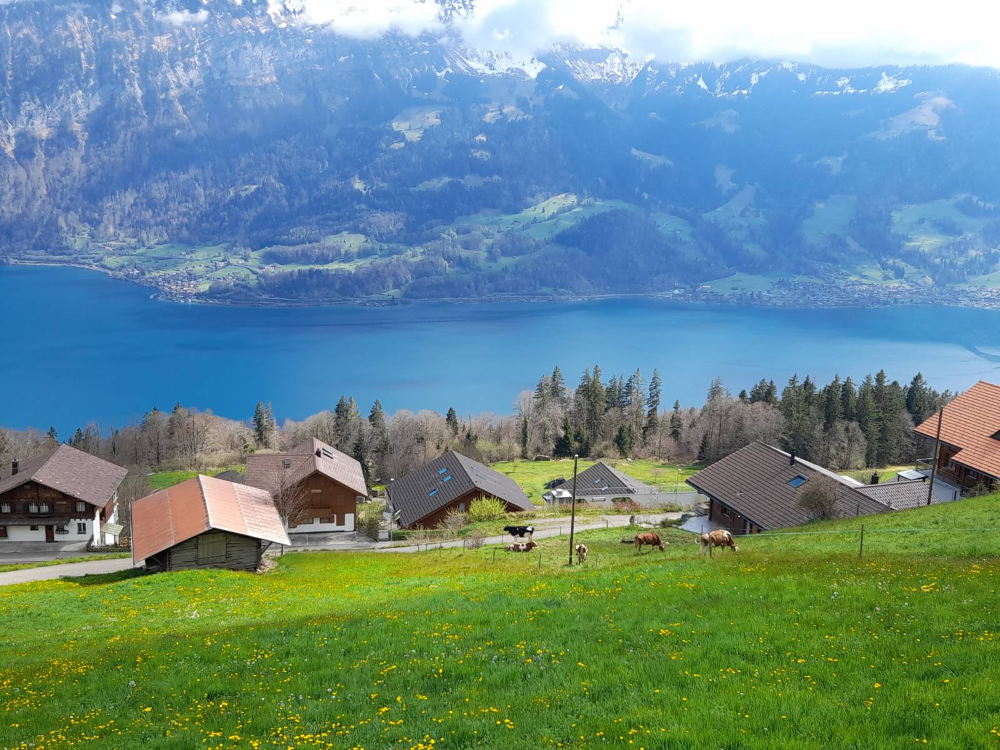

The Open Science Retreat, Batenberg, Switzerland: collaboation, connection and snow!
For four days in April I was lucky enough to be able to attend the Open Science Retreat, in Batenberg, Switzerland. The Open Science Retreat (OSR) is a chance for anyone interested in and passionate about Open Science to get together, brain storm ideas and spend time working on projects related to this. It is run by the Digital Research Academy, with a focus on discussion and networking as well as getting some interesting outputs. “A week full of scientific discussions and reflections, getting work done, making new friends and resetting.” I have already written another blog post about travelling there by train.

The event works on an unconference format, with topic groups submitted a week or so before the event. We then had a chance to hear from the proposers about each of the topics, and talk with other people interested in the topic. This means there’s a bit of evolution of the topics, with the topics revised based on who is attending and what they want to do. Written down, this does sound sightly random, but it does work in practice. Within about 30 min of discussions, we had formed then 6 topic groups that would run throughout the remainder of the Retreat.
Alongside the topic groups, which ran for 3 mornings, there were a variety of short sessions (30min - 1hr) and workshops (2hr) as well as a focus on well being and recovery from what often is a busy academic schedule. In the spectacular setting of Batenburg, Switzerland, I made the most of the location and spent a reasonable amount of time outside. There was an organised walk around the Swiss mountains, and trips out to see local sights. We also had optional social events in the evening, with opportunities for silent disco, board games and networking.

I opted to take part in the ‘Even More Open’ group, which was a combination of topics focused about discover-ability and usability of Open Science tools including Quick and Easy Wins for Open Science and discussion around the use of AI. Our group was larger than typical for these groups (9 people) so after some initial discussions we split into one more theoretical group and one more practical group. I was working with more-practical group on a new tool to help discover existing Open Science tools, on the principle that while there are many many tools out there, it can be hard to find the right tool for the job. This tool is currently hosted on AdvancdSci Research Solutions and allows you to select tools for specific points in the research life cycle, subject area, level of complexity and a number of other options:
As a part of the OSR, the aim was to make outputs available at the end of the week, in an open form (of course!). We have shared our output on Research Equals, a new platform for me, but a way of sharing outputs with a DOI. For us, this included a summary report with links to our tool and other outputs and slide from the wrap up sessions: DOI: 10.53962/znvv-1p7c
There is so much potential with open science it is sometimes hard to pin down exactly what to do or how to do it. A number of groups addressed this is a number of different ways, including discussions about how to reward participation in Open Science, dealing with burnout and roles as an activist and a short session on calendar management. Check out all the available outputs on Research Equals.
This was not my typical GIS conference, and it was great to meet with a different group outside GIS! I did get a chance to help a group make a map. The Open Science activists were keen to create a map of activists which they could update and edit without relying on third parties (organisations or people). I adapted The Fellowship of the Traveling #GISChat Book which is a Leaflet map based in a website with a bit of R coding to geocode locations and convert the CSV data into GeoJSON. It is currently a work in progress but it was an exciting project to be involved in.

I am a bit fan of making GIS more accessible to anyone who wants to do mapping* and the map I developed for the activist group could easily be adapted for other users. I hope to finish off the automation elements (I need to work out GitHub actions) and potentially package it up as an easy to use tool for anyone else doing mapping.
*I was reminded about the variation in terminology that we have with different groups. The activist group wanted a geographic map of people, but this was not understood by everyone - often the term ‘map’ or ‘mapping’ is used in a non-spatial sense looking at relationships between different members or a group or elements - e.g. how people relate to each other. The group knew what they wanted and I understood them correctly, but not everyone who saw their message did!
Finally, I discovered how varied the weather in Switzerland at about 1200m elevation can be - while most of the trip was sunny, on the final morning I woke up to this:
It was a great event, and I would recommend it to anyone who in interested in discussing or doing Open Science. The next retreat is planned to be in the UK, so please do come along! Join the DRA mailing list to learn about upcoming DRA events!